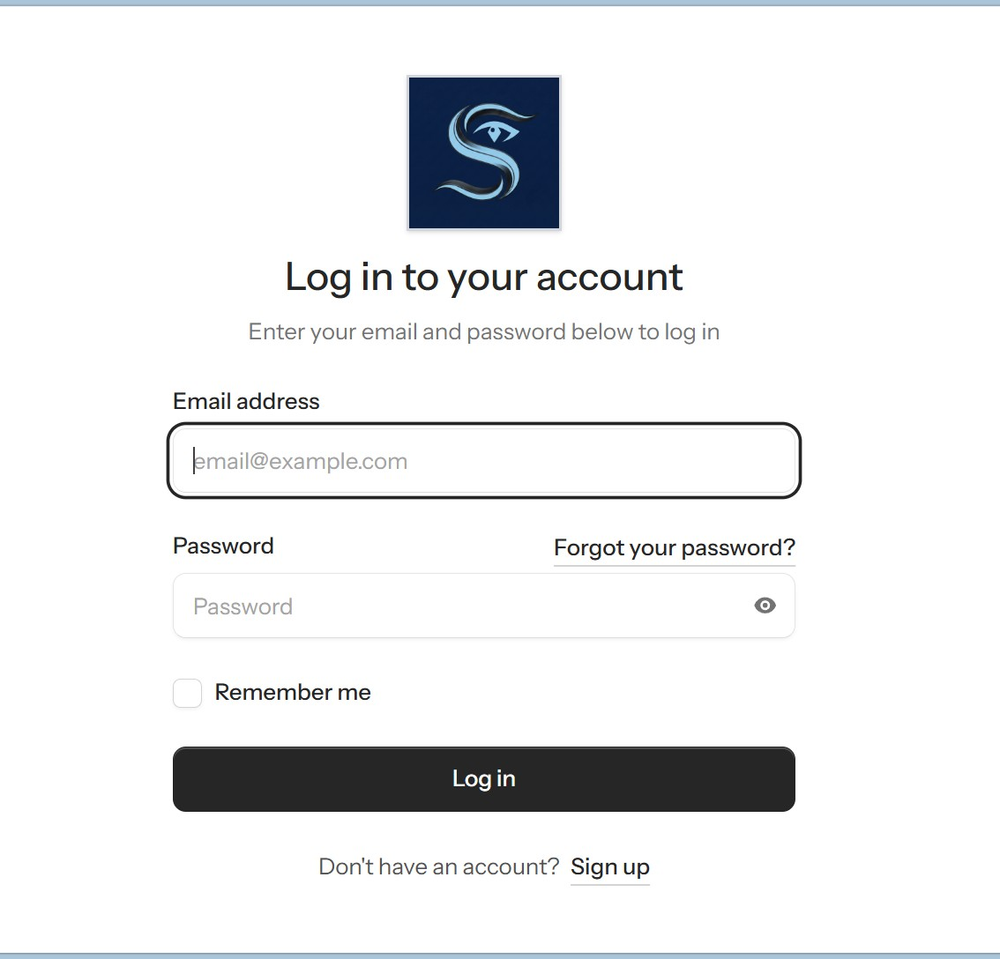
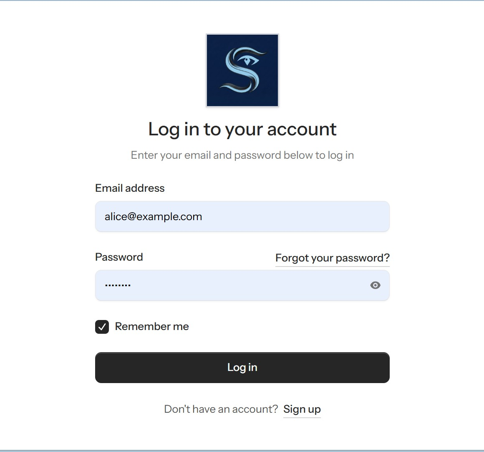
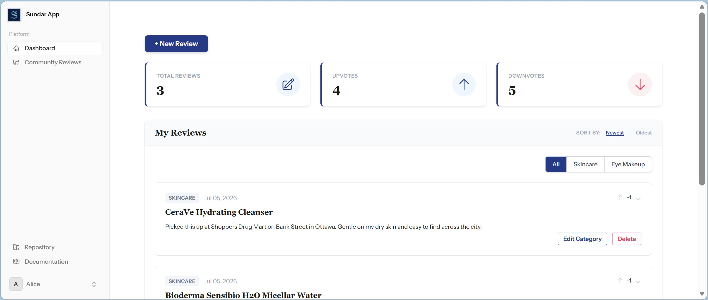
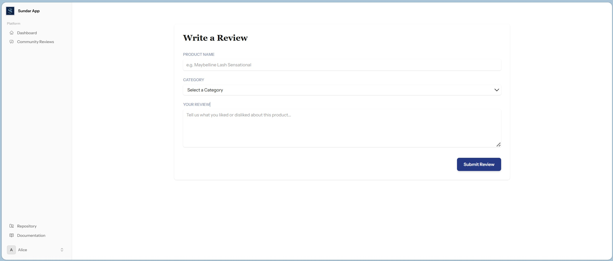
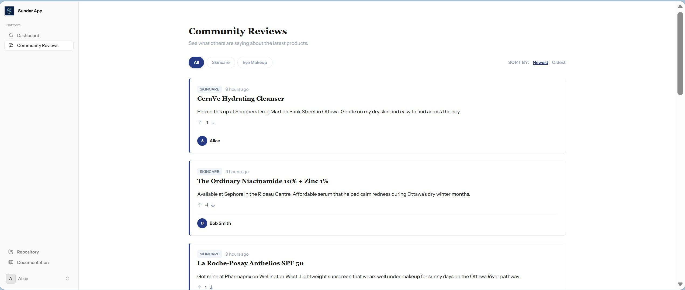
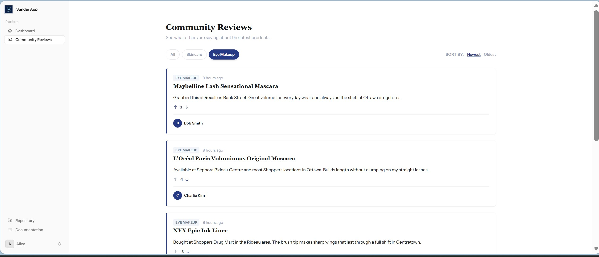

Sundar Web App
Sundar is a data-driven web application that functions as a community forum where users can create an account and share posts about skincare products or eye makeup products. Built with a relational database backend, the app tracks reviews, categories, and community upvotes so members can discover honest product feedback from real users.
View the source code:
Capstone-Project-Sundar-Web-App on GitHub
How the App Works
The walkthrough below follows a typical user journey—from signing in to publishing a review and browsing community posts filtered by category.






Development Highlights
Sundar was developed as a capstone project using Laravel, Livewire, and Tailwind CSS, with a relational database modeling users, posts, categories, and upvotes. The one-vote-per-post rule is enforced at the data layer to protect community metrics, and category filters keep skincare and eye makeup discussions easy to navigate.